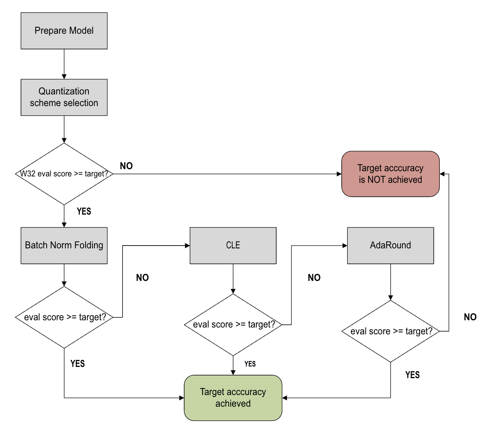

Automatic quantization¶
Context¶
AIMET toolkit offers a suite of post-training quantization (PTQ) techniques. Often, applying these techniques in a specific sequence results in better quantized accuracy and performance.
The automatic quantization (AutoQuant) feature analyzes your trained model, determines the best sequence of AIMET PTQ quantization techniques, and applies these techniques. You can specify the tolerable accuracy drop in the AutoQuant API. As soon as this threshold accuracy is reached, AutoQuant stops applying PTQ quantization techniques.
Without the AutoQuant feature, you must manually try combinations of AIMET quantization techniques. This manual process is error-prone and time-consuming.
Workflow¶
The AutoQuant workflow is shown in the following figure.
{kind=link}
Before entering the optimization workflow, AutoQuant prepares by:
Checking the validity of the model and converting the model into an AIMET quantization-friendly format (Prepare Model).
Selecting the best-performing quantization scheme for the given model (QuantScheme Selection)
After the preparation steps, AutoQuant proceeds to try four PTQ techniques:
Adaptive rounding (Adaround) (if enabled)
Automatic Mixed Precision (AMP) (if enabled)
These techniques are applied in a best-effort manner until the model meets the allowed accuracy drop. If applying AutoQuant fails to satisfy the evaluation goal, AutoQuant returns the model that gave the best results.
Prerequisites¶
There are no special prerequisites to using AutoQuant. It can be applied to most models.
Procedure¶
Step 1¶
Load the model for automatic quantization.
In the following code example, the model is MobileNetV2.
import torch
import math
import numpy as np
from torchvision.models import mobilenet_v2
from torchvision import transforms
from torch.utils.data import DataLoader
from datasets import load_dataset
device = "cuda:0" if torch.cuda.is_available() else "cpu"
model = mobilenet_v2(pretrained=True).eval().to(device)
In the following code example, the model is MobileNetV2.
import tensorflow as tf
from aimet_common.defs import QuantizationDataType, QuantScheme
from aimet_common.quantsim_config.utils import get_path_for_per_channel_config
from aimet_tensorflow.keras.adaround_weight import AdaroundParameters
from aimet_tensorflow.keras.auto_quant_v2 import AutoQuantWithAutoMixedPrecision
from tensorflow.keras import applications, losses, metrics, preprocessing
from tensorflow.keras.applications import mobilenet_v2
model = applications.MobileNetV2()
AutoQuant is not supported in aimet-onnx
Step 2¶
Prepare the dataset.
num_batches = 32
labeled_data = load_dataset('imagenet-1k', streaming=True, split="train")
labeled_data_loader = DataLoader(labeled_data, batch_size=num_batches, num_workers = 4)
dummy_input = torch.randn(1, 3, 224, 224).to(device)
dataset = load_dataset(
'ILSVRC/imagenet-1k',
split='validation',
)
preprocess = transforms.Compose(
[
transforms.Resize(256),
transforms.CenterCrop(224),
transforms.ToTensor(),
transforms.Normalize(mean=[0.485, 0.456, 0.406], std=[0.229, 0.224, 0.225]),
]
)
def transforms(examples):
examples['image'] = [
preprocess(image.convert('RGB')).numpy() for image in examples['image']
]
examples['image'] = [np.expand_dims(image, axis=0) for image in examples['image']]
return examples
dataset.set_transform(transforms)
BATCH_SIZE = 1
EVAL_DATASET_SIZE = 64
CALIBRATION_DATASET_SIZE = 32
class CustomDataLoader(DataLoader):
def __init__(self, data: np.ndarray, batch_size: int, iterations: int):
super().__init__(data, batch_size, iterations)
self._batch_index = 0
def __iter__(self):
self._batch_index = 0
return self
def __next__(self):
if self._batch_index < self.iterations:
str_idx = self._batch_index
end_idx = self._batch_index + self.batch_size
self._batch_index += 1
return self._data[str_idx:end_idx]
else:
raise StopIteration
unlabelled_data_loader = CustomDataLoader(
dataset['image'], BATCH_SIZE, math.ceil(CALIBRATION_DATASET_SIZE / BATCH_SIZE)
)
unlabeled_data = load_dataset('imagenet-1k', streaming=True, split="unlabeled")
unlabeled_data_loader = DataLoader(unlabeled_data, batch_size=num_batches, num_workers = 4)
BATCH_SIZE = 32
imagenet_dataset = preprocessing.image_dataset_from_directory(
directory='<your_imagenet_validation_data_path>',
label_mode='categorical',
image_size=(224, 224),
batch_size=BATCH_SIZE,
shuffle=True,
)
imagenet_dataset = imagenet_dataset.map(
lambda x, y: (mobilenet_v2.preprocess_input(x), y)
)
NUM_CALIBRATION_SAMPLES = 2048
unlabeled_dataset = imagenet_dataset.take(NUM_CALIBRATION_SAMPLES // BATCH_SIZE).map(
lambda x, _: x
)
eval_dataset = imagenet_dataset.skip(NUM_CALIBRATION_SAMPLES // BATCH_SIZE)
AutoQuant is not supported in aimet-onnx
Step 3¶
Prepare the evaluation callback.
For your model, implement the evaluation callback to serve your own goals, maintaining the function signature.
from typing import Optional
def eval_callback(model: torch.nn.Module, num_of_samples: Optional[int] = None) -> float:
data_loader = CustomDataLoader(
dataset, BATCH_SIZE, math.ceil(EVAL_DATASET_SIZE / BATCH_SIZE)
)
if num_of_samples:
iterations = math.ceil(num_of_samples / data_loader.batch_size)
else:
iterations = len(data_loader)
batch_cntr = 1
acc_top1 = 0
for data in data_loader:
input_data = data['image'][0]
target = data['label']
pred_probs = model(input_data.cuda())
pred_labels = np.argmax(pred_probs, axis=1)
acc_top1 += np.sum(pred_labels == target)
batch_cntr += 1
if batch_cntr > iterations:
break
acc_top1 /= len(data_loader)
return acc_top1
def eval_callback(model: tf.keras.Model, _) -> float:
# Model should be compiled before evaluation
model.compile(
loss=losses.CategoricalCrossentropy(), metrics=metrics.CategoricalAccuracy()
)
_, acc = model.evaluate(eval_dataset)
return acc
AutoQuant is not supported in aimet-onnx
Step 4¶
Create the AutoQuant object.
from aimet_torch.auto_quant import AutoQuantWithAutoMixedPrecision
auto_quant = AutoQuantWithAutoMixedPrecision(
model, dummy_input, unlabelled_data_loader, eval_callback
)
auto_quant = AutoQuantWithAutoMixedPrecision(
model,
eval_callback,
unlabeled_dataset,
param_bw=4,
output_bw=8,
quant_scheme=QuantScheme.post_training_tf,
config_file=get_path_for_per_channel_config(),
)
AutoQuant is not supported in aimet-onnx
Step 5¶
Set AdaRound parameters.
from aimet_torch.adaround.adaround_weight import AdaroundParameters
ADAROUND_DATASET_SIZE = 128
adaround_data_loader = DataLoader(
data=dataset['image'],
batch_size=BATCH_SIZE,
iterations=math.ceil(ADAROUND_DATASET_SIZE / BATCH_SIZE),
)
adaround_params = AdaroundParameters(
adaround_data_loader, num_batches=len(adaround_data_loader)
)
auto_quant.set_adaround_params(adaround_params)
adaround_params = AdaroundParameters(
unlabeled_dataset, num_batches=NUM_CALIBRATION_SAMPLES // BATCH_SIZE
)
auto_quant.set_adaround_params(adaround_params)
adaround_params = AdaroundParameters(
unlabeled_data_loader, num_batches=len(unlabeled_data_loader)
)
auto_quant.set_adaround_params(adaround_params)
Step 6¶
Set AMP parameters.
from aimet_common.defs import QuantizationDataType
W8A8 = (
(8, QuantizationDataType.int), # A: int8
(8, QuantizationDataType.int), # W: int8
)
W8A16 = (
(16, QuantizationDataType.int), # A: int16
(8, QuantizationDataType.int), # W: int8
)
auto_quant.set_mixed_precision_params(candidates=[W8A16, W8A8])
W4A8 = (
(8, QuantizationDataType.int), # A: int8
(4, QuantizationDataType.int), # W: int4
)
W8A8 = (
(8, QuantizationDataType.int), # A: int8
(8, QuantizationDataType.int), # W: int8
)
auto_quant.set_mixed_precision_params(candidates=[W4A8, W8A8])
W4A8 = (
(8, QuantizationDataType.int), # A: int8
(4, QuantizationDataType.int), # W: int4
)
W8A8 = (
(8, QuantizationDataType.int), # A: int8
(8, QuantizationDataType.int), # W: int8
)
auto_quant.set_mixed_precision_params(candidates=[W4A8, W8A8])
Step 7¶
Run AutoQuant.
sim, initial_accuracy = auto_quant.run_inference()
model, optimized_accuracy, encoding_path, pareto_front = auto_quant.optimize(allowed_accuracy_drop=0.01)
print(f"- Quantized Accuracy (before optimization): {initial_accuracy:.4f}")
print(f"- Quantized Accuracy (after optimization): {optimized_accuracy:.4f}")
sim, initial_accuracy = auto_quant.run_inference()
model, optimized_accuracy, encoding_path, pareto_front = auto_quant.optimize(
allowed_accuracy_drop=0.01
)
print(f'- Quantized Accuracy (before optimization): {initial_accuracy:.4f}')
print(f'- Quantized Accuracy (after optimization): {optimized_accuracy:.4f}')
- Quantized Accuracy (before optimization): 0.0235
- Quantized Accuracy (after optimization): 0.7164
sim, initial_accuracy = auto_quant.run_inference()
model, optimized_accuracy, encoding_path, pareto_front = auto_quant.optimize(
allowed_accuracy_drop=0.01
)
print(f'- Quantized Accuracy (before optimization): {initial_accuracy:.4f}')
print(f'- Quantized Accuracy (after optimization): {optimized_accuracy:.4f}')
- Quantized Accuracy (before optimization): 0.0235
- Quantized Accuracy (after optimization): 0.7164
API¶
Top-level API
- class aimet_torch.auto_quant.AutoQuantWithAutoMixedPrecision(model, dummy_input, data_loader, eval_callback, param_bw=8, output_bw=8, quant_scheme=QuantScheme.post_training_tf_enhanced, rounding_mode='nearest', config_file=None, results_dir='/tmp', cache_id=None, strict_validation=True, model_prepare_required=True)[source]
Integrate and apply post-training quantization techniques.
AutoQuant includes 1) batchnorm folding, 2) cross-layer equalization, 3) Adaround, and 4) Automatic Mixed Precision (if enabled). These techniques will be applied in a best-effort manner until the model meets the evaluation goal given as allowed_accuracy_drop.
- Parameters:
model (
Module) – Model to be quantized. Assumes model is on the correct devicedummy_input (
Union[Tensor,Tuple]) – Dummy input for the model. Assumes that dummy_input is on the correct devicedata_loader (
DataLoader) – A collection that iterates over an unlabeled dataset, used for computing encodingseval_callback (
Callable[[Module],float]) – Function that calculates the evaluation scoreparam_bw (
int) – Parameter bitwidthoutput_bw (
int) – Output bitwidthquant_scheme (
QuantScheme) – Quantization schemerounding_mode (
str) – Rounding modeconfig_file (
Optional[str]) – Path to configuration file for model quantizersresults_dir (
str) – Directory to save the results of PTQ techniquescache_id (
Optional[str]) – ID associated with cache resultsstrict_validation (
bool) – Flag set to True by default.hen False, AutoQuant will proceed with execution and handle errors internally if possible. This may produce unideal or unintuitive results.model_prepare_required (
bool) – Flag set to True by default.If False, AutoQuant will skip model prepare block in the pipeline.
- run_inference()[source]
Creates a quantization model and performs inference
- Return type:
Tuple[QuantizationSimModel,float]- Returns:
QuantizationSimModel, model accuracy as float
- optimize(allowed_accuracy_drop=0.0)[source]
Integrate and apply post-training quantization techniques.
- Parameters:
allowed_accuracy_drop (
float) – Maximum allowed accuracy drop- Return type:
Tuple[Module,float,str,List[Tuple[int,float,QuantizerGroup,Tuple]]]- Returns:
Tuple of (best model, eval score, encoding path, pareto front). Pareto front is None if AMP is not enabled or AutoQuant exits without performing AMP.
- set_adaround_params(adaround_params)[source]
Set Adaround parameters. If this method is not called explicitly by the user, AutoQuant will use data_loader (passed to __init__) for Adaround.
- Parameters:
adaround_params (
AdaroundParameters) – Adaround parameters.- Return type:
None
- set_export_params(onnx_export_args=-1, propagate_encodings=None)[source]
Set parameters for QuantizationSimModel.export.
- Parameters:
onnx_export_args (
OnnxExportApiArgs) – optional export argument with onnx specific overrides if not provide export via torchscript graphpropagate_encodings (
Optional[bool]) – If True, encoding entries for intermediate ops (when one PyTorch ops results in multiple ONNX nodes) are filled with the same BW and data_type as the output tensor for that series of ops.
- Return type:
None
- set_mixed_precision_params(candidates, num_samples_for_phase_1=128, forward_fn=<function _default_forward_fn>, num_samples_for_phase_2=None)[source]
Set mixed precision parameters. NOTE: Automatic mixed precision will NOT be enabled unless this method is explicitly called by the user.
- Parameters:
candidates (
List[Tuple[Tuple[int,QuantizationDataType],Tuple[int,QuantizationDataType]]]) – List of tuples of candidate bitwidths and datatypes.num_samples_for_phase_1 (
Optional[int]) – Number of samples to be used for performance evaluation in AMP phase 1.forward_fn (
Callable) – Function that runs forward pass and returns the output tensor. which will be used for SQNR compuatation in phase 1. This function is expected to take 1) a model and 2) a single batch yielded from the data loader, and return a single torch.Tensor object which represents the output of the model. The default forward function is roughly equivalent tolambda model, batch: model(batch)num_samples_for_phase_2 (
Optional[int]) – Number of samples to be used for performance evaluation in AMP phase 2.
- Return type:
None
- set_model_preparer_params(modules_to_exclude=None, concrete_args=None)[source]
Set parameters for model preparer.
- Parameters:
modules_to_exclude (
Optional[List[Module]]) – List of modules to exclude when tracing.concrete_args (
Optional[Dict[str,Any]]) – Parameter for model preparer. Allows you to partially specialize your function, whether it’s to remove control flow or data structures. If the model has control flow, torch.fx won’t be able to trace the model. Check torch.fx.symbolic_trace API in detail.
- get_quant_scheme_candidates()[source]
Return the candidates for quant scheme search. During
optimize(), the candidate with the highest accuracy will be selected among them.- Return type:
Tuple[_QuantSchemePair,...]- Returns:
Candidates for quant scheme search
- set_quant_scheme_candidates(candidates)[source]
Set candidates for quant scheme search. During
optimize(), the candidate with the highest accuracy will be selected among them.- Parameters:
candidates (
Tuple[_QuantSchemePair,...]) – Candidates for quant scheme search
Top-level API
- class aimet_tensorflow.keras.auto_quant_v2.AutoQuantWithAutoMixedPrecision(model, eval_callback, dataset, param_bw=8, output_bw=8, quant_scheme=QuantScheme.post_training_tf_enhanced, rounding_mode='nearest', config_file=None, results_dir='/tmp', cache_id=None, strict_validation=True)[source]¶
Integrate and apply post-training quantization techniques.
AutoQuant includes 1) batchnorm folding, 2) cross-layer equalization, 3) Adaround, and 4) Automatic Mixed Precision (if enabled). These techniques will be applied in a best-effort manner until the model meets the evaluation goal given as allowed_accuracy_drop.
- Parameters:
model (
Model) – Model to be quantized. Assumes model is on the correct deviceeval_callback (
Callable[[Model,Optional[int]],float]) – A function that maps model and the number samples to the evaluation score. This callback is expected to return a scalar value representing the model performance evaluated against exactly N samples, where N is the number of samples passed as the second argument of this callback. NOTE: If N is None, the model is expected to be evaluated against the whole evaluation dataset.dataset (
DatasetV2) – An unlabeled dataset for encoding computation. By default, this dataset will be also used for Adaround unless otherwise specified by self.set_adaround_paramsparam_bw (
int) – Parameter bitwidthoutput_bw (
int) – Output bitwidthquant_scheme (
QuantScheme) – Quantization schemerounding_mode (
str) – Rounding modeconfig_file (
Optional[str]) – Path to configuration file for model quantizersresults_dir (
str) – Directory to save the results of PTQ techniquescache_id (
Optional[str]) – ID associated with cache resultsstrict_validation (
bool) – Flag set to True by default.hen False, AutoQuant will proceed with execution and handle errors internally if possible. This may produce unideal or unintuitive results.
- run_inference()[source]¶
Creates a quantization model and performs inference
- Return type:
Tuple[QuantizationSimModel,float]- Returns:
QuantizationSimModel, model accuracy as float
- optimize(allowed_accuracy_drop=0.0)[source]¶
Integrate and apply post-training quantization techniques.
- Parameters:
allowed_accuracy_drop (
float) – Maximum allowed accuracy drop- Return type:
Tuple[Model,float,str,List[Tuple[int,float,QuantizerGroup,Tuple]]]- Returns:
Tuple of (best model, eval score, encoding path, pareto front). Pareto front is None if AMP is not enabled or AutoQuant exits without performing AMP.
- set_adaround_params(adaround_params)[source]¶
Set Adaround parameters. If this method is not called explicitly by the user, AutoQuant will use dataset (passed to __init__) for Adaround.
- Parameters:
adaround_params (
AdaroundParameters) – Adaround parameters.
- set_mixed_precision_params(candidates, num_samples_for_phase_1=128, forward_fn=<function _default_forward_fn>, num_samples_for_phase_2=None)[source]¶
Set mixed precision parameters. NOTE: Automatic mixed precision will NOT be enabled unless this method is explicitly called by the user.
- Parameters:
candidates (
List[Tuple[Tuple[int,QuantizationDataType],Tuple[int,QuantizationDataType]]]) – List of tuples of candidate bitwidths and datatypes.num_samples_for_phase_1 (
Optional[int]) – Number of samples to be used for performance evaluation in AMP phase 1.forward_fn (
Callable) – Function that runs forward pass and returns the output tensor. which will be used for SQNR compuatation in phase 1. This function is expected to take 1) a model and 2) a single batch yielded from the dataset, and return a single torch.Tensor object which represents the output of the model.num_samples_for_phase_2 (
Optional[int]) – Number of samples to be used for performance evaluation in AMP phase 2.